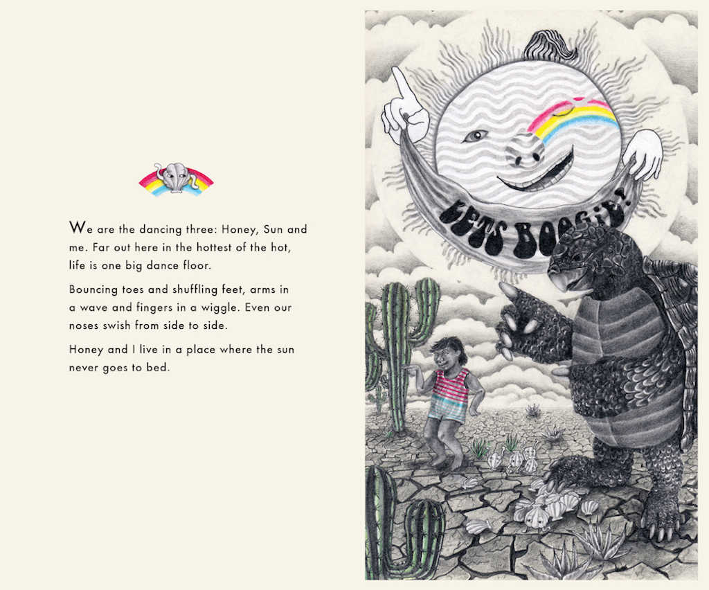
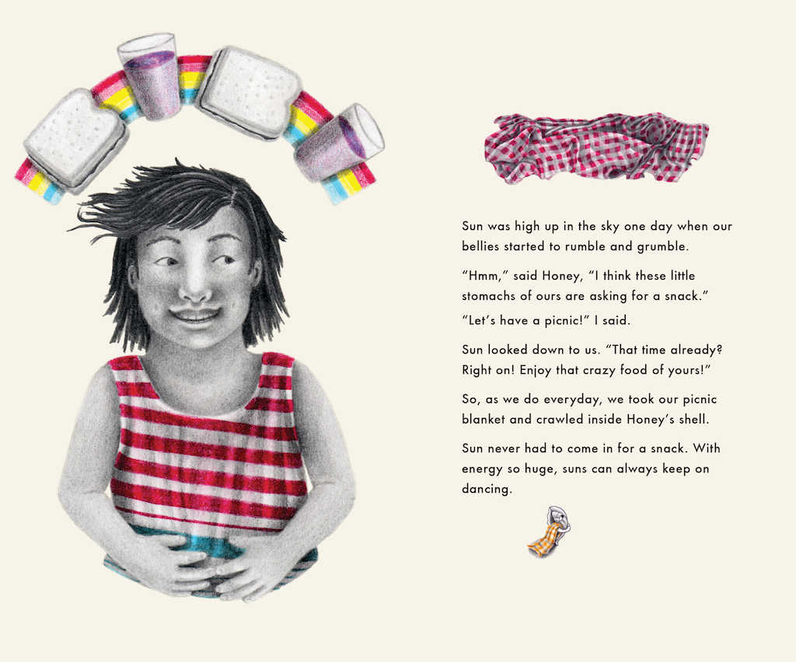
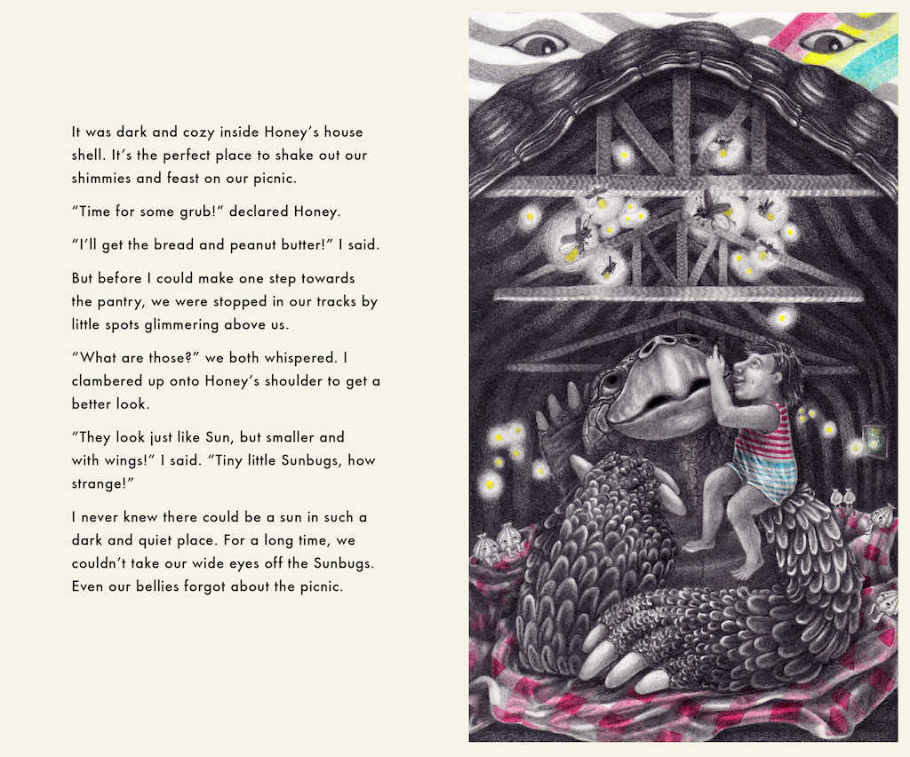
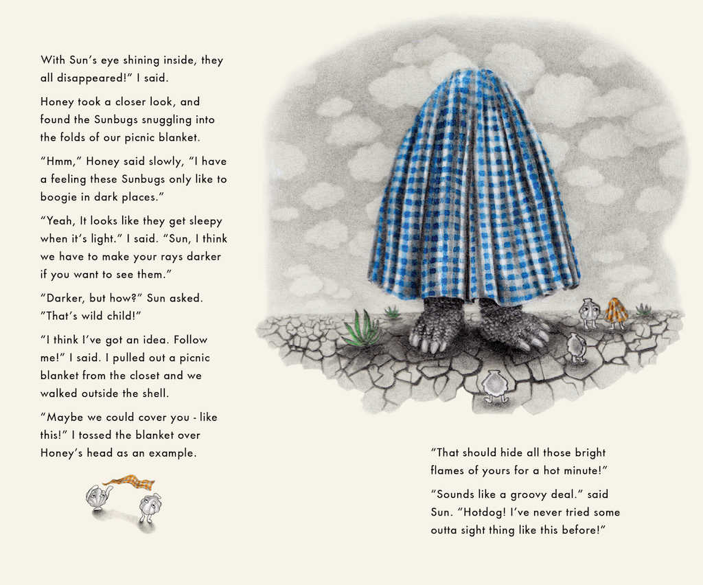
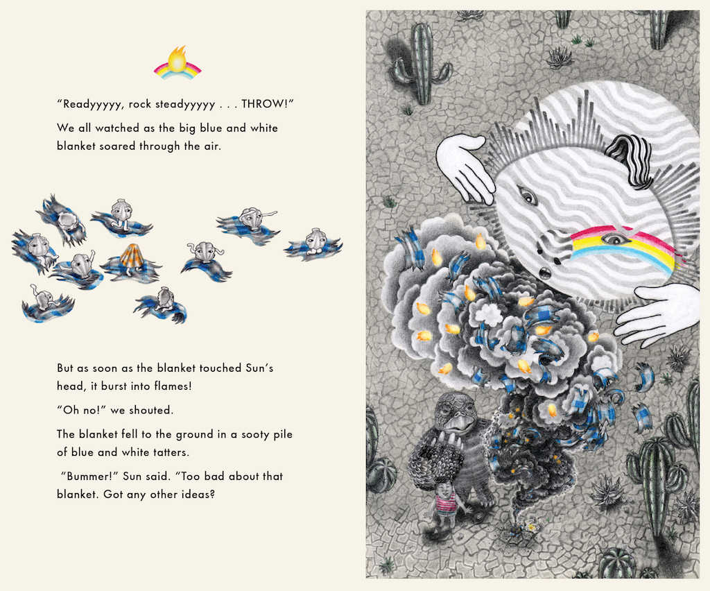
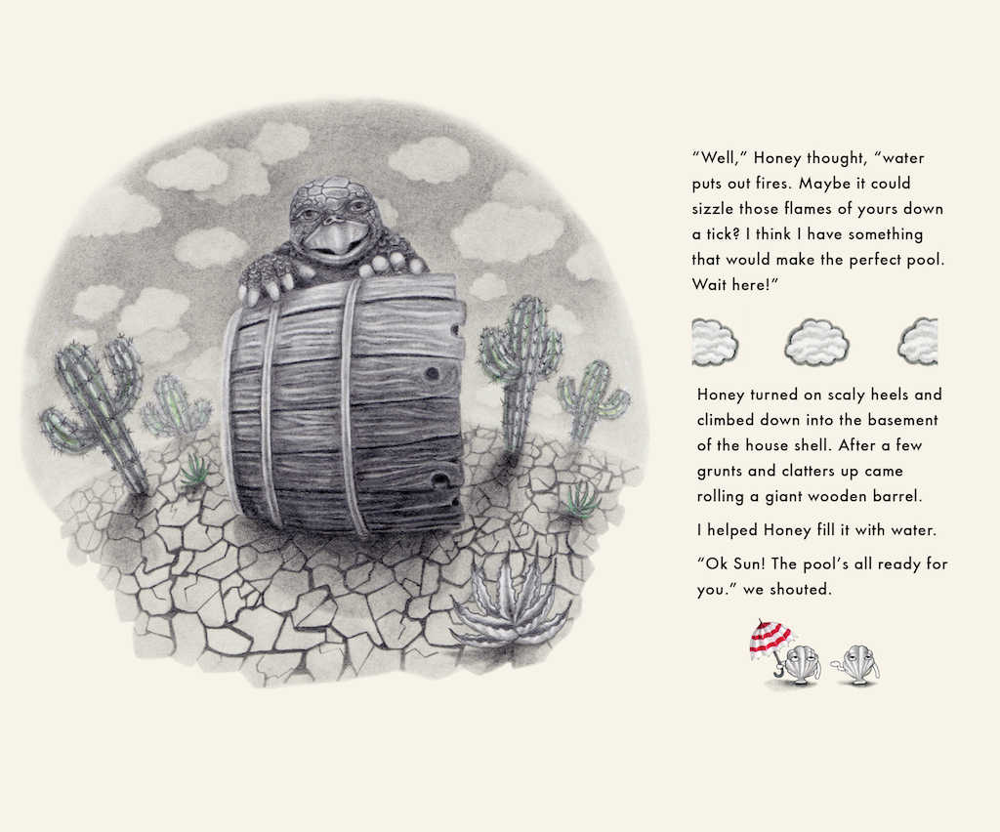
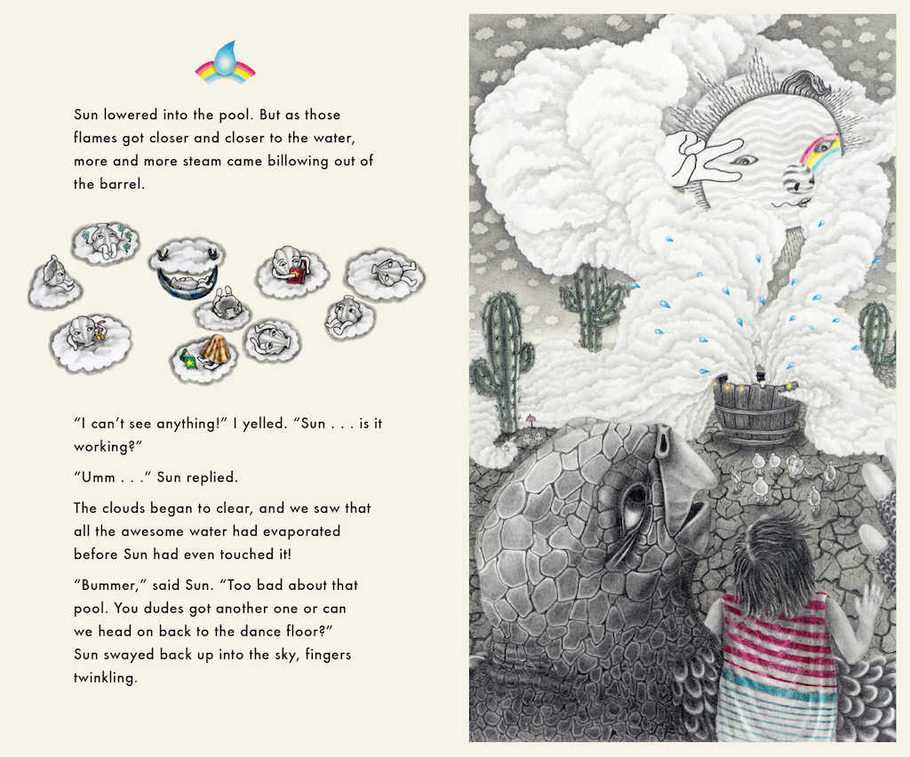
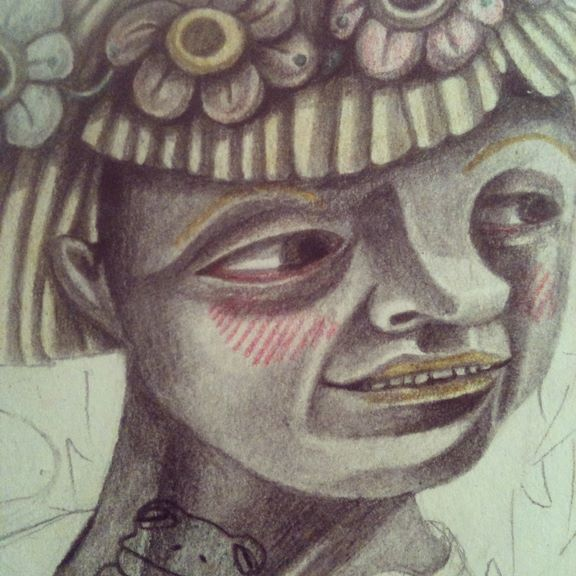

In a place where the sun never goes to bed, three dancers emerge on the scene. A turtle named Honey, a sun named Sun, and a child who narrates the story.
A challenge arises one day when Honey and our narrator discover an exciting new creature, which their friend Sun is just too bright to see.
In the following quest of inquiry, experimentation and imagination the trio tries to answer the biggest question they have ever been faced with:
How on Earth can the sun be darkened?!
The one thing they know for sure is, the only way to see in the dark is to be in the dark.








